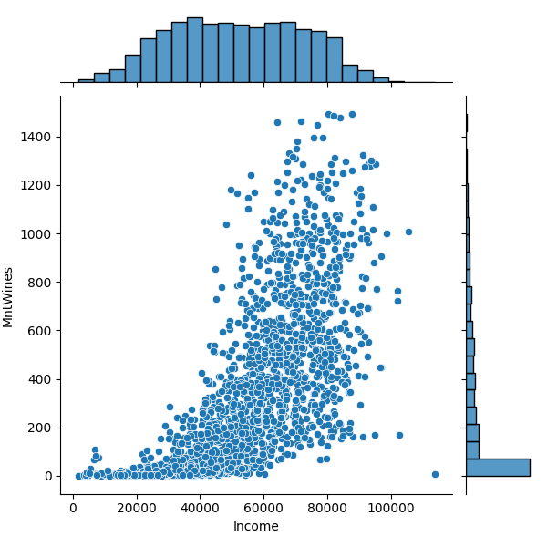
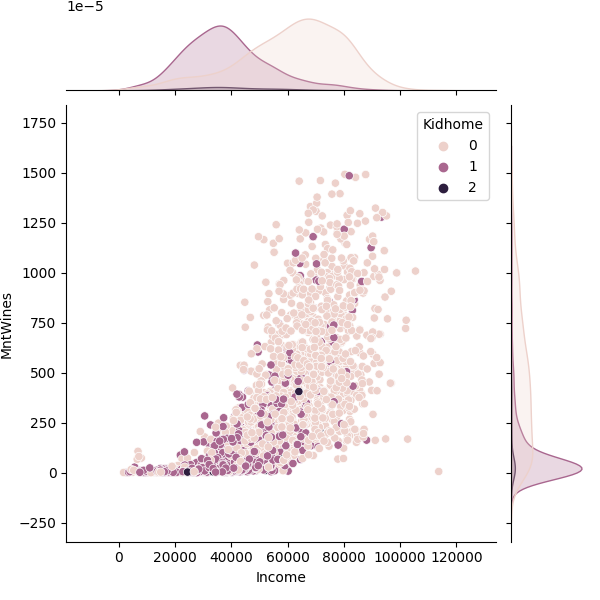
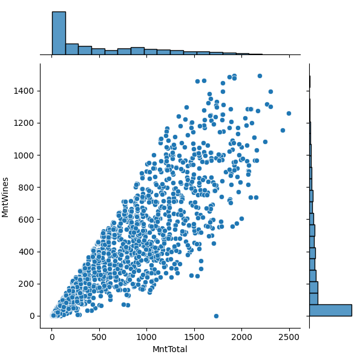

Project 1
Data Set: Grocery store marketing campaign data: ifood_df.cvs
Target: MntWines: The amount a customer will spend on wines
Relationship 1: MntWines and Income

The amount customers will spend on wines roughly scales with their income.
Relationship 2: MntWines and Kidhome

Customers are much less likely to spend money on wine if they have kids at home.
Relationship 3: MntWines and MntTotal

The more customers spend on all other product categories combined, the more customers will spend on wines.
We can see from these plots that the household income of customers and the amount they spend on products other than wine generally increases
the likelyhood that they spend more on wine. We can also see that they become less likely to spend on wine the more kids they have.
I plan one using these three variables to predict the amount customers will spend on wine, with the hypothesis that customers with a high income,
no kids living at home, and more money spent on other products are more likely to spend more on wine than other customers.